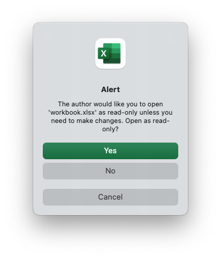

Worksheet protection
It is occasionally necessary to lock all or parts of a worksheet to prevent unintentional editing. For example you may have certain fields that you want a user to update but have other instruction or calculation cells that you don't want modified.
In Excel you do this by turning on the "Review -> Sheet Protect" option and in
rust_xlsxwriter you can use the worksheet.protect() method:
// SPDX-License-Identifier: MIT OR Apache-2.0
//
// Copyright 2022-2023, John McNamara, jmcnamara@cpan.org
//! Example of cell locking and formula hiding in an Excel worksheet
//! rust_xlsxwriter library.
use rust_xlsxwriter::{Format, Workbook, XlsxError};
fn main() -> Result<(), XlsxError> {
// Create a new Excel file object.
let mut workbook = Workbook::new();
// Add a worksheet to the workbook.
let worksheet = workbook.add_worksheet();
// Create some format objects.
let unlocked = Format::new().set_unlocked();
let hidden = Format::new().set_hidden();
// Protect the worksheet to turn on cell locking.
worksheet.protect();
// Examples of cell locking and hiding.
worksheet.write_string_only(0, 0, "Cell B1 is locked. It cannot be edited.")?;
worksheet.write_formula_only(0, 1, "=1+2")?; // Locked by default.
worksheet.write_string_only(1, 0, "Cell B2 is unlocked. It can be edited.")?;
worksheet.write_formula(1, 1, "=1+2", &unlocked)?;
worksheet.write_string_only(2, 0, "Cell B3 is hidden. The formula isn't visible.")?;
worksheet.write_formula(2, 1, "=1+2", &hidden)?;
worksheet.write_string_only(4, 0, "Use Menu -> Review -> Unprotect Sheet")?;
worksheet.write_string_only(5, 0, "to remove the worksheet protection.")?;
worksheet.autofit();
// Save the file to disk.
workbook.save("worksheet_protection.xlsx")?;
Ok(())
}Here is a more complete example:
// SPDX-License-Identifier: MIT OR Apache-2.0
//
// Copyright 2022-2023, John McNamara, jmcnamara@cpan.org
//! Example of cell locking and formula hiding in an Excel worksheet
//! rust_xlsxwriter library.
use rust_xlsxwriter::{Format, Workbook, XlsxError};
fn main() -> Result<(), XlsxError> {
// Create a new Excel file object.
let mut workbook = Workbook::new();
// Add a worksheet to the workbook.
let worksheet = workbook.add_worksheet();
// Create some format objects.
let unlocked = Format::new().set_unlocked();
let hidden = Format::new().set_hidden();
// Protect the worksheet to turn on cell locking.
worksheet.protect();
// Examples of cell locking and hiding.
worksheet.write_string_only(0, 0, "Cell B1 is locked. It cannot be edited.")?;
worksheet.write_formula_only(0, 1, "=1+2")?; // Locked by default.
worksheet.write_string_only(1, 0, "Cell B2 is unlocked. It can be edited.")?;
worksheet.write_formula(1, 1, "=1+2", &unlocked)?;
worksheet.write_string_only(2, 0, "Cell B3 is hidden. The formula isn't visible.")?;
worksheet.write_formula(2, 1, "=1+2", &hidden)?;
worksheet.write_string_only(4, 0, "Use Menu -> Review -> Unprotect Sheet")?;
worksheet.write_string_only(5, 0, "to remove the worksheet protection.")?;
worksheet.autofit();
// Save the file to disk.
workbook.save("worksheet_protection.xlsx")?;
Ok(())
}The key parts of this example are:
- In Excel all cells have a default "locked" format so once a worksheet is protected the cells cannot be changed.
- To allow some cells to be edited you can set a "unlocked" format.
- You can also "hide" formulas in a protected worksheet.
The output from the program will look like the following. Note that cell "B2", which was unlocked in the example, has been edited.

And this is the alert you get if you try to edit a locked cell.

Setting a protection password
You can deter a user from turning off worksheet protection by adding a worksheet
level password using the worksheet.protect_with_password() method:
// SPDX-License-Identifier: MIT OR Apache-2.0
//
// Copyright 2022-2023, John McNamara, jmcnamara@cpan.org
//! The following example demonstrates protecting a worksheet from editing with
//! a password.
use rust_xlsxwriter::{Workbook, XlsxError};
fn main() -> Result<(), XlsxError> {
let mut workbook = Workbook::new();
// Add a worksheet to the workbook.
let worksheet = workbook.add_worksheet();
// Protect the worksheet from modification.
worksheet.protect_with_password("abc123");
worksheet.write_string_only(0, 0, "Unlock the worksheet to edit the cell")?;
workbook.save("worksheet.xlsx")?;
Ok(())
}This gives the following dialog when the user tries to unprotect the worksheet.

Note: Worksheet level passwords in Excel offer very weak protection.
They do not encrypt your data and are very easy to deactivate. Full workbook
encryption is not supported by rust_xlsxwriter. See the section on Workbook
Protection below.
Choosing which worksheet elements to protect
Excel allows you to control which objects or actions on the worksheet that are protected. The default Excel options are:

Almost all the options are protected by default apart from "Select locked cells" and "Select unlocked cells".
If you wish to turn on or off any of these options you can use the
ProtectWorksheetOptions struct and the worksheet.protect_with_options()
method. For example:
// SPDX-License-Identifier: MIT OR Apache-2.0
//
// Copyright 2022-2023, John McNamara, jmcnamara@cpan.org
//! The following example demonstrates setting the worksheet properties to be
//! protected in a protected worksheet. In this case we protect the overall
//! worksheet but allow columns and rows to be inserted.
use rust_xlsxwriter::{ProtectWorksheetOptions, Workbook, XlsxError};
fn main() -> Result<(), XlsxError> {
let mut workbook = Workbook::new();
// Add a worksheet to the workbook.
let worksheet = workbook.add_worksheet();
// Set some of the options and use the defaults for everything else.
let options = ProtectWorksheetOptions {
insert_columns: true,
insert_rows: true,
..ProtectWorksheetOptions::default()
};
// Set the protection options.
worksheet.protect_with_options(&options);
worksheet.write_string_only(0, 0, "Unlock the worksheet to edit the cell")?;
workbook.save("worksheet.xlsx")?;
Ok(())
}This changes the allowed options to:

Workbook protection
As noted above rust_xlsxwriter doesn't provide workbook level
encryption/protection and it is unlikely that it will be added.
However, it is possible to encrypt an rust_xlsxwriter file using a third party open source tool called msoffice-crypt. This works for macOS, Linux and Windows:
msoffice-crypt.exe -e -p password clear.xlsx encrypted.xlsx
Read-only workbook
If you wish to have an Excel workbook open as read-only by default then you can
use the workbook.read_only_recommended() method:
// SPDX-License-Identifier: MIT OR Apache-2.0
//
// Copyright 2022-2023, John McNamara, jmcnamara@cpan.org
//! The following example demonstrates creating a simple workbook which opens
//! with a recommendation that the file should be opened in read only mode.
use rust_xlsxwriter::{Workbook, XlsxError};
fn main() -> Result<(), XlsxError> {
let mut workbook = Workbook::new();
let _worksheet = workbook.add_worksheet();
workbook.read_only_recommended();
workbook.save("workbook.xlsx")?;
Ok(())
}This presents the user of the file with an option to open it in "read-only" mode. This means that any changes to the file can’t be saved back to the same file and must be saved to a new file.
The alert looks like this:
